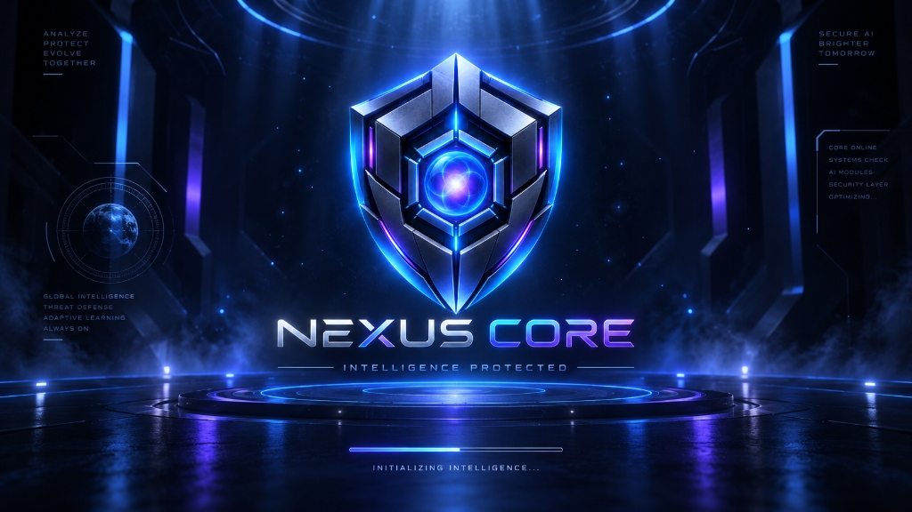

NEXUS CORE / MOTION STUDY 01
STANDALONE PROTOTYPEContainment protocol

NEXUS COREINTELLIGENCE PROTECTED
INITIALIZING NEXUS CORE
CONTAINMENT SEALED · PREVIEW READY
Preview timing only. Real startup readiness will remain authoritative during integration.